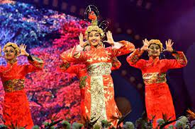
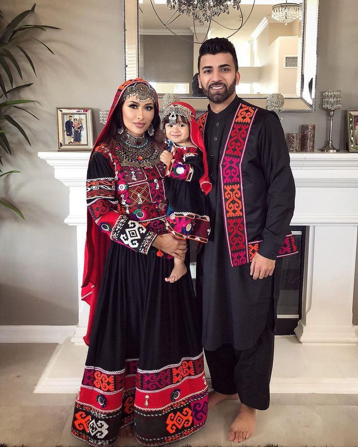
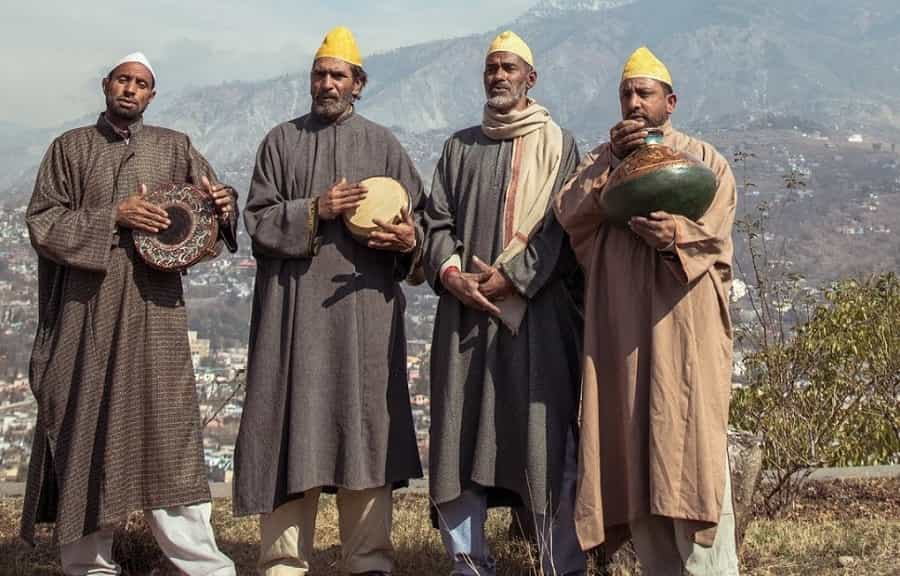
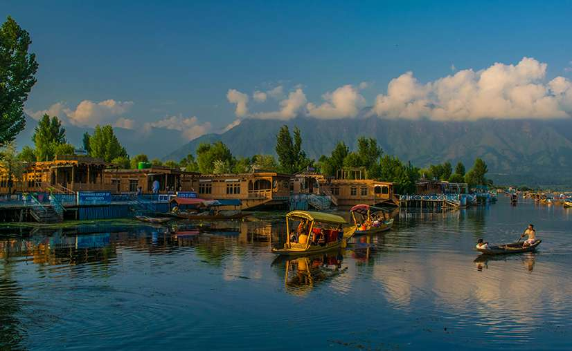
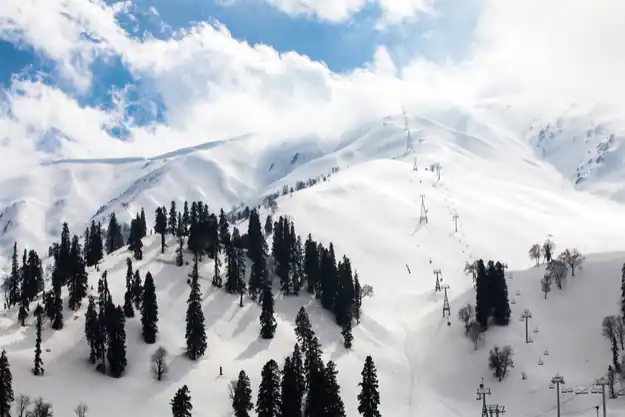
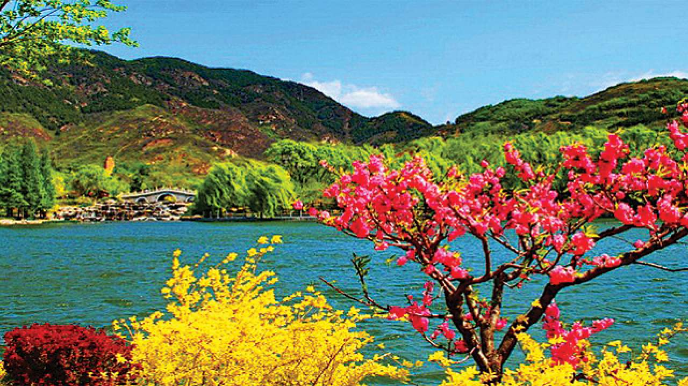
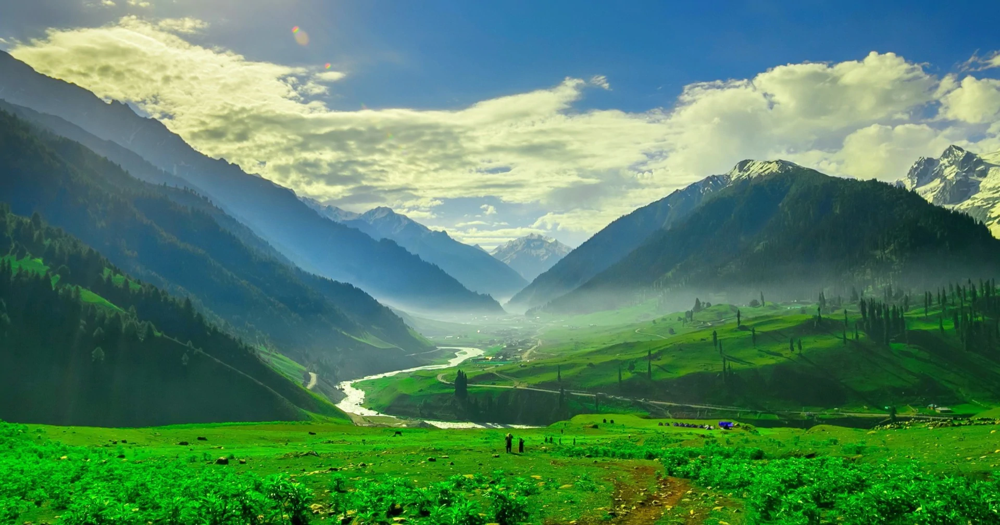

Jammu Kashmir has a diverse blend of many cultures. It has a composite culture created by people from different religions such as Hindu, Sikh, Muslim, and Buddhist. This composite culture of Kashmir is also known as Kashmiriyat. The cultural significance of this place is great.
Jammu and Kashmir has Hindu-majority Jammu region, Muslim-majority Kashmir Valley
Folk Dance
Rouf Dance
One of the most known dance form in all the regions of Jammu and Kashmir is 'Rouf'. It is a dance performed on set of spring season and has always been an integral part of kashmiri people since a very long time.
This dance form is practiced on festive occasions like Eid and Ramzan days are going. It is performed by group of women standing face to face to each other but the most notable feature of this dance form is the footwork of the dancers.
Bachha Nagma
This dance form is generally performed at cultural gatherings or special functions like weddings and is only and only performed by boys. Even man can perform this dance but have to be dressed as boys. It consists of six to seven members and there is no external singer one of the dancers is the lead singer among the dancers that sings in a melodious voice and other members joins him in chorus.
Dress
Pheran
It comes with broad and long yet loose sleeves and there is heavy embroidery to it. This is a perfect blend of Iranian and Indian clothing. Generally, the Hindu Kashmir woman has her Pheran which touches her feet and is even tied at the waist with a folded material which is called Iihung. For the Kashmir men as well the attire includes the Churidar Pajama along with which they wear a skull cap with or without shawl depending on the climate.
Pathani Suit
In Jammu and Kashmir, the Pathani suit is often referred to as Khan Dress. It is worn by men and you will find this type of attire mostly wore by Srinagar people. Turban is also common among Muslim men. It is said that skull caps protect them. People who belong to Karakuli and peasants are said to be wearing complete frill skull caps with shawls made of Pashmina which signifies a royalty symbol.
Cuisine
Traditional Dishes in Jammu
In Jammu, the dishes of Dogra cuisine are quite popular. This region is famous for rajma chawal, with rajma (kidney beans) being a local crop. Dishes like Ambal, Khatta Meat, Kulthein Dal, Dal Patt, Maa da Madra, and Auriya mark the prominence of Dogra cuisine in Jammu.
The other traditional dishes that are a must-try in Jammu Region are Morel (Gushi) Palov, Madra, Oria (Potato/Pumpkin in mustard sauce), Maani, Khameera, Katha Meat (Sour Mutton), Shasha(raw mango chatni), Kasrod and Timru-di-Chatni,Shiri Pulav, and Mitha Bhat (Sweet Rice).
As desserts, Jammu offers dishes like Chocolate Barfi, Sund Panjeeri, Patisa.
Traditional Dishes of Kashmir
The beautiful valley of Kashmir reflects a rich influence of Persian, Central Asian and Afghan food in its cuisine. In Kashmiri cuisine, spices like cardamom, cinnamon, fennel, and cloves are used, making the food delectable and aromatic.
The highlight of the Kashmiri cuisine is Wazwan, a collection of 32 veg and non-veg dishes. Wazwan is considered a mandate in every celebration, be it weddings or any other significant events.
Some of the important dishes in Kashmir are Tabakhmaaz, Shab Deg, Dum Olav/Dum Aloo, Aab Gosh, Goshtaba, Lyader Tschaman, Runwagan Tschaman, Riste, Nader ti Gaad, Herath, Novroze, Yakhni, and the widely acclaimed Rogan Josh.
The valley is also famous for its bakery tradition, and thus you can find here various kinds of bread. Tsot and tsochvor, sheermal, baqerkhayn (puff pastry), lavas (unleavened bread) and kulcha are some popular bakery items in Kashmir
Tourism
With its stunning blue lakes, beautiful gardens and rolling mountains, one can never run out of places to visit in Jammu and Kashmir. The enthralling beauty of the place offers a tranquil sojourn for travellers looking to get away from the bustle of the busy city life.
Among its top attractions, the most visited tourist places in Jammu and Kashmir are its beautiful lakes. From the stunning waters of Pangong, the highest lake in India, to the picturesque shikaras in Dal, the jewel lake of Srinagar- the waters of Jammu and Kashmir are an enthralling sight to behold.
Dal Lake
Reckoned to be the pride of Kashmir tourism, Dal Lake is the most popular attraction in Srinagar. Enclosed by splendid Pir Panjal mountains and Mughal Gardens.Dal Lake is also one of the best locations in Kashmir for film shooting as it offers some incredible vistas of lofty rolling hills, the distant snow-capped mountains.

The canopied Shikaras sailing on the lake are one of the major attractions of Dal Lake. The houseboats on the lake are also the top attraction as the best accommodation option in Srinagar to the tourists.
Gulmarg
The beauty of Gulmarg and its proximity to Srinagar makes it one of the most popular hill stations in India. The town of Gulmarg is not just a mountain resort which boasts of exceptional beauty, but also has other claims to fame like the highest golf course in the world and India’s premier ski resort which has earned the title of ‘heartland of winter sports in India’. 
Pahalgam
Pahalgam, known as the ‘Valley of Shepherds’, is is surrounded by thickly wooded pine forests, breathtaking vistas of meadows and the snow-clad Himalayan mountains.
The town also holds an amazing two-day long Snow Festival that showcases winter sports like skiing, snow-sledging and many more which tourists can participate in. Other activities that tourists can indulge in are golf, trekking and angling.

Gurez Valley
Gurez Valley is one of the least explored regions of Kashmir and the one that can truly be called an offbeat destination. It is a place of high scenic beauty though it near the border areas.
Sonmarg
Sonmarg, which means "Meadow of Gold", is a picturesque hill station in the Kashmir Valley located in the Indian union territory of Jammu and Kashmir. Situated at an altitude of 2800 meters and adorned with a majestic glacier, meadow, dense forests, and snow-capped mountains makes Sonmarg an ideal holiday destination in Kashmir.
